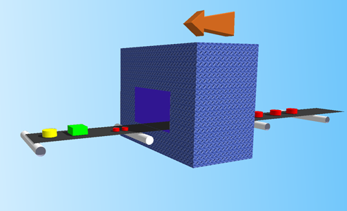

grep() and map()
AAHCClick on A to make all fonts on the page smaller.
Click on A to make all fonts on the page larger.
Click on HC to toggle high contrast mode. When you move your mouse over
some bold words in high contrast mode, related words are automatically highlighted. Text is shown
in black and white.
Lesson Objectives
When you complete this lesson, you will be able to:
- use the grep() function to select the elements from a list that match some
criteria.
- use the map() fucntion.
"The human animal differs from the lesser primates in his passion for lists."
-H. Allen Smith
Welcome to a new lesson, where you'll use the Perl skills you've learned so far, and incorporate some new ones to
manipulate lists at a whole new level! In this
lesson we'll add two important functions to your tool chest: grep() and map().
Both of these functions take a list as input, and provide a list as output. These tools
will allow you to transform lists using simple expressions rather than whole blocks of code. Sounds great, right? Let's get
going!
grep()
If you've used the Unix program called grep—and we built a simplified version of it in
Perl 2—you may be tempted to think that the grep() function in Perl does the same thing.
Well, it's
kind of related, except that Perl's grep()
really has nothing to do with regular expressions.
The grep() function is used to select the elements of a list that match some
criteria. And it lets you write less code than you would building a loop and a temporary array to serve that same purpose.
Let's try executing that task without using grep() first. Create tracks.pl in your
/perl3 folder as shown:
CODE TO TYPE:
#!/usr/bin/perl
use strict;
use warnings;
my $MINUTE = 60; # Seconds therein
my %length;
while ( <DATA> )
{
next unless /\A\d+\.\s+"(.*?)".*\s(\d+):(\d+)/;
my ($title, $min, $sec) = ($1, $2, $3);
$length{$title} = $min * $MINUTE + $sec;
}
my $limit = shift || 3;
my @long_tracks;
for my $title ( sort keys %length)
{
push @long_tracks, $title if $length{$title} > $limit * $MINUTE;
}
report( $limit, @long_tracks );
sub report
{
my $limit = shift;
print "Tracks over $limit minutes long:\n";
print "$_\n" for @_;
}
__END__
Sgt. Pepper's Lonely Hearts Club Band (Track listing from Wikipedia)
Side one
No. Title Length
1. "Sgt. Pepper's Lonely Hearts Club Band" 2:00
2. "With a Little Help from My Friends" 2:43
3. "Lucy in the Sky with Diamonds" 3:26
4. "Getting Better" 2:47
5. "Fixing a Hole" 2:35
6. "She's Leaving Home" 3:33
7. "Being for the Benefit of Mr. Kite!" 2:35
Side two
No. Title Length
1. "Within You Without You" (George Harrison) 5:05
2. "When I'm Sixty-Four" 2:37
3. "Lovely Rita" 2:41
4. "Good Morning Good Morning" 2:42
5. "Sgt. Pepper's Lonely Hearts Club Band (Reprise)" 1:19
6. "A Day in the Life" 5:04
Our program tracks.pl takes an optional argument to report the minimum length of a track in minutes.
 and run it:
and run it:
INTERACTIVE SESSION:
code:~$ cd perl3
cold:~/perl3$ ./tracks.pl
Tracks over 3 minutes long:
A Day in the Life
Lucy in the Sky with Diamonds
She's Leaving Home
Within You Without You
cold:~/perl3$ ./tracks.pl 4
Tracks over 4 minutes long:
A Day in the Life
Within You Without You
The goal in this program was to construct the array @long_tracks and have it contain the titles we
wanted. We could have reported them one at a time in the loop, but imagine that we need
that array for something else later in the program. Now let's change the program and try something else. Modify your code as shown:
CODE TO TYPE:
#!/usr/bin/perl
use strict;
use warnings;
my $MINUTE = 60; # Seconds therein
my %length;
while ( <DATA> )
{
next unless /\A\d+\.\s+"(.*?)".*\s(\d+):(\d+)/;
my ($title, $min, $sec) = ($1, $2, $3);
$length{$title} = $min * $MINUTE + $sec;
}
my $limit = shift || 3;
my @long_tracks = grep { $length{$_} > $limit * $MINUTE } sort keys %length;
for my $title ( sort keys %length)
{
push @long_tracks, $title if $length{$title} > $limit * $MINUTE;
}
report( $limit, @long_tracks );
sub report
{
my $limit = shift;
print "Tracks over $limit minutes long:\n";
print "$_\n" for @_;
}
__END__
Sgt. Pepper's Lonely Hearts Club Band (Track listing from Wikipedia)
Side one
No. Title Length
1. "Sgt. Pepper's Lonely Hearts Club Band" 2:00
2. "With a Little Help from My Friends" 2:43
3. "Lucy in the Sky with Diamonds" 3:26
4. "Getting Better" 2:47
5. "Fixing a Hole" 2:35
6. "She's Leaving Home" 3:33
7. "Being for the Benefit of Mr. Kite!" 2:35
Side two
No. Title Length
1. "Within You Without You" (George Harrison) 5:05
2. "When I'm Sixty-Four" 2:37
3. "Lovely Rita" 2:41
4. "Good Morning Good Morning" 2:42
5. "Sgt. Pepper's Lonely Hearts Club Band (Reprise)" 1:19
6. "A Day in the Life" 5:04
and run it. You'll see exactly the same output as
before.
So how does it work? The grep() function's general form looks like this:
OBSERVE:
RESULT_LIST = grep { EXPRESSION } LIST
Or, in our example:
OBSERVE:
my @long_tracks = grep { $length{$_} > $limit * $MINUTE } sort keys %length
Your chosen EXPRESSION goes inside the curly braces; Perl evaluates it
in Boolean context once for each element of the input list LIST. $_
is set equal to each element in turn (this is much like the postfixed foreach statement). If the result of
EXPRESSION is true, the element being evaluated is added to
RESULT_LIST; if not, it is ignored.
So grep() works as a filter; any elements of the input that pass the test in
EXPRESSION go through to the result.
The braces delimit a block of code; you can have multiple statements within them (separated by
semicolons). The value of the last statement or expression in the block of code will be used for the test.
So this description of grep() is equally valid:
OBSERVE:
RESULT_LIST = grep { CODE } LIST
You could, for example, replace the code { $length{$_} > $limit * $MINUTE } in the program
above with { my $len = $length{$_}; $len / $MINUTE > $limit } and
it would perform exactly the same function.
I like to think of a conveyor belt metaphor for grep():
As each element of the input list passes (from right to left) through the expression/code block, it either
makes it out the other end into the result, or is rejected.
Here's an example of a common use of grep(). The readdir()
function for returning a list of filenames in a directory corresponding to a directory handle opened by
opendir() always returns the two directories "." and ".." as part of the list, because
those entries are always in every directory. Since they correspond to the current directory and parent
directory respectively, it is almost never useful to process those elements. Let's take a look. Create
directory.pl in your /perl3 folder as shown:
CODE TO TYPE:
#!/usr/bin/perl
use strict;
use warnings;
opendir my $dh, '.' or die "Can't open . $!\n";
my @files = readdir $dh;
print "$_\n" for sort @files;
and run it. Near the top, the lines "." and
".." are printed. Those elements
are almost certainly going to get in the way, regardless of the purpose we put @files to in our program.
Here's how we usually solve this problem. Modify directory.pl as follows:
CODE TO TYPE:
#!/usr/bin/perl
use strict;
use warnings;
opendir my $dh, '.' or die "Can't open . $!\n";
my @files = grep { ! /\A\.\.?\z/ } readdir $dh;
print "$_\n" for sort @files;
and run it. The "." and ".." lines are no longer
printed. Because $_ is set in the block to the current element being considered, we can include
a match expression that is implicitly bound to $_, as we have done here. Do you understand the
regex? It means:
| ! | Negation |
| \A | Must start with |
| \. | Literal period |
| \.? | Followed by zero or one literal periods |
| \z | Must end here |
We'll be using regexes of increasing complexity in our programs from now on. If you don't understand
them, review the corresponding material from earlier lessons, in the Intermediate Perl course, or
ask your instructor.
map()
map() is like grep(), only it's even cooler! It has the same general
form:
OBSERVE:
RESULT_LIST = map { EXPRESSION or CODE } LIST
And just like with
grep(), with map()the block is
executed once for each element of the input LIST,
with $_ being set to each element in turn. But in this case, the result of the block is not used
to decide whether to pass the element through, but is used as the output element!
Let's try some examples. Create miles.pl in your /perl3 folder as shown:
CODE TO TYPE:
#!/usr/bin/perl -C2
use strict;
use warnings;
my @squares = map { $_ ** 2 } 1 .. 10;
print "@squares\n";
my %main_tank = ( humvee => 30, voyager => 0, moped => 1 );
my %reserve_tank = (humvee => 0, voyager => 400, moped => 0.1 );
my %mpg = (humvee => 9, voyager => 25_000/1_100, moped => 80 );
my @vehicles = qw(humvee voyager moped);
my @miles_left = map { $main_tank{$_} > 0
? $mpg{$_} * $main_tank{$_}
: $mpg{$_} * $reserve_tank{$_}
} @vehicles;
print "@miles_left\n";
my @x_axis = map { $_ * 0.3 } -10 .. 10;
my @y_axis = map { cos $_ } @x_axis;
print map { '*' x (40 + 30 * $_), "\n" } @y_axis;
my %char = ( eacute => 233, cedilla => 231, agrave => 224 );
$_ = chr for values %char;
my @words = qw(caf_eacute_ gar_cedilla_on d_eacute_j_agrave_);
print map { s/_(.*?)_/$char{$1}/g; "$_\n" } @words;
and run it as shown:
INTERACTIVE SESSION:
cold:~/perl3$ ./miles.pl
1 4 9 16 25 36 49 64 81 100
270 9090.90909090909 80
**********
************
*****************
************************
*********************************
******************************************
**************************************************
**********************************************************
****************************************************************
********************************************************************
**********************************************************************
********************************************************************
****************************************************************
**********************************************************
**************************************************
******************************************
*********************************
************************
*****************
************
**********
café
garçon
déjà
If you didn't get the accents on the last three lines, make sure you have the -C2 flag on the
shebang line (that's the first line of a Perl program, by the way—it begins with #!).
This is not usually necessary and is mostly required here due to the complex environment that
brings the terminal window to you through a Java applet.
If you're curious about how the cosine wave pattern of asterisks was made, check out
perldoc perlop
for the explanation of the x (repetition) operator in scalar context.
In our code there are several examples of the use of the map() operator.
Go over each one carefully to make sure you understand them; the code in each case is brief and
could easily be overlooked.
The values()
function returns a list of aliases to the actual values, meaning that if I change those values, I
change the actual values in the hash itself. Go to perldoc -f values to read about that feature.
In the conveyor belt metaphor, the machine that the inputs pass through gets to replace each input with
whatever it wants, usually the result of transforming the input in some way:

This is important: the expression (or last statement) in the block is evaluated in list
context, so it can return any number of elements. That means that the number of elements in the
output doesn't have to be the same as the number of elements in the input: it can be fewer (if the block
evaluates to an empty list at least some of the time) or more (if the block evaluates to a list containing
two or more elements at least some of the time).
For example, we may create a hash merely to test for set existence, because we want to know whether some string is a key in the
hash. We usually make all the values in the hash 1 in this case. If the hash is created
from a literal list of keys or an array of keys, the code is longer than it has to be. Create
map_hash.pl in your /perl3 folder as shown:
CODE TO TYPE:
#!/usr/bin/perl
use strict;
use warnings;
my %marsupial = (koala => 1, kangaroo => 1, possum => 1, wombat => 1);
chomp( my @amphibians = <DATA> );
my %amphibian;
$amphibian{$_} = 1 for @amphibians;
print "Marsupials: ", join( ' ', sort keys %marsupial ), "\n";
print "Amphibians: ", join( ' ', sort keys %amphibian ), "\n";
__END__
frog
toad
salamander
newt
caecilian
and run it as shown:
INTERACTIVE SESSION:
cold:~/perl3$ ./map_hash.pl
Marsupials: kangaroo koala possum wombat
Amphibians: caecilian frog newt salamander toad
I'm always sneaking something extra into these examples! See how this program
chomp()s every member of an array in one pass? Take a look at
perldoc -f chomp for further explanation.
That program shows two ways of setting a hash: a literal list and
setting from an array of keys. In each case, every value in the hash is 1. Now modify map_hash.pl as
shown:
CODE TO TYPE:
#!/usr/bin/perl
use strict;
use warnings;
my %marsupial = (koala => 1, kangaroo => 1, possum => 1, wombat => 1);
my %marsupial = map { ($_, 1) } qw(koala kangaroo possum wombat);
chomp( my @amphibians = <DATA> );
my %amphibian = map { ($_, 1) } @amphibians;
$amphibian{$_} = 1 for @amphibians;
print "Marsupials: ", join( ' ', sort keys %marsupial ), "\n";
print "Amphibians: ", join( ' ', sort keys %amphibian ), "\n";
__END__
frog
toad
salamander
newt
caecilian
and run it. You get exactly the same output
as before. The result of each map() block is a two-element list (I put parentheses
around them to make this clearer, but you can actually leave them off): the element from the input list (the
desired key) and the literal 1 (the value).
There is always another way to get the same results you would from grep() and
map(); but using them may keep your code shorter and more readable. Remember, Perl's
motto is, "There's More Than One Way To Do It"—in fact, that's the subtitle of the book
"Programming Perl"
published by O'Reilly!
A word of warning: sometimes programmers get carried away with the succinctness of map()
and use it where they should be using foreach statements. You can tell that this
is happening is when they are ignoring the output list. For instance:
OBSERVE:
my $total = 0;
map { $total += $length{$_} } grep { $length{$_} > $limit * $MINUTE } keys %length;
We call that using map() in a void context. It may work, but it's not a good practice; it
makes the code harder to understand by another Perl programmer, who will wonder why there is no output list.
And it's not any shorter than the preferred code either:
OBSERVE:
my $total = 0;
$total += $length{$_} for grep { $length{$_} > $limit * $MINUTE } keys %length;
It's not uncommon to see grep() and map() blocks that
are several lines long. Just make sure to indent them thoughtfully to help the reader if you're writing code like that. Later on
in this course we'll join a map(), a
grep(), and another map() together in a chain! There's no reason that one
conveyor belt can't feed into another, after all.
We are making really good progress. Keep it going in the next lesson! See you there...
Once you finish the lesson, go back to the syllabus to complete the homework.